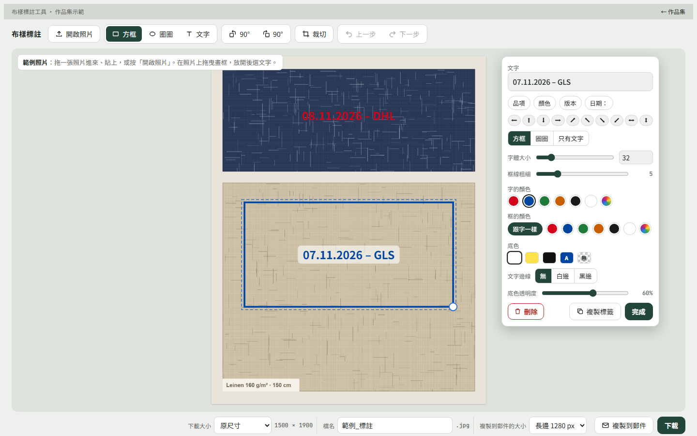

每天都有布樣到貨，每一張照片都要標同樣的三件事
樣品部門收到包裹，拍照，然後要讓客戶或供應商知道：哪一天到、哪家物流送的、這是哪個品項哪個顏色。原本的做法是把照片丟進繪圖軟體或 Word，手動加字、調大小、再存檔寄出。動作不難，但每天重複，而且每個人標出來的樣子都不一樣。
為一家奧地利紡織公司的樣品與業務同事做的單檔網頁工具：拖進照片、畫框、選預設文字、複製到 Outlook。沒有伺服器、沒有安裝，照片從頭到尾只在使用者的瀏覽器裡。這是我第一個「不寫程式、用需求把 AI 帶到能用」的工具，兩天內提了約三十個需求。

樣品部門收到包裹，拍照，然後要讓客戶或供應商知道：哪一天到、哪家物流送的、這是哪個品項哪個顏色。原本的做法是把照片丟進繪圖軟體或 Word，手動加字、調大小、再存檔寄出。動作不難，但每天重複，而且每個人標出來的樣子都不一樣。
我沒有打開編輯器，而是把「拖照片進來、畫框、按一下日期、複製到郵件」這個流程寫成需求，交給 AI 實作，再用實際照片去試、回報哪裡不對。兩天內大約提了三十個需求，從「框要能拖著走」到「貼進 Outlook 不要太大」。這個過程本身後來變成一篇給不寫程式的上班族看的教學。
字多大、什麼顏色、日期格式、檔案多大才寄得出去，這些每次都要想一次。所以設計目標不是做一個功能齊全的影像編輯器，而是把樣品部門會做的那幾個決定變成預設值，讓人只需要做「框哪裡、寫什麼」這兩件事。
第一次用的人最容易卡在「我要先去哪裡找一張照片」。中文版開啟時直接顯示一張程式畫出來的範例照片和兩個範例標籤，拖一下就懂操作；因為是程式畫的，檔案裡沒有任何真實布樣。德文版給同事用，刻意保留空白拖放區。
收樣當天要記的就是「幾號、哪家送到」，所以範例標籤和輸入提示都用「日期 – 物流商」格式，日期由程式算當天。預設晶片按下去是在游標位置插入文字，不是覆蓋，因為實際標籤常是「品項 123 顏色 05」這種組合。
寄信的照片不需要原尺寸，長邊 1280 已經夠看，又不會把信件撐大；下載則保留原尺寸給存檔。兩個按鈕、兩組尺寸記憶，使用者不用每次在兩種用途之間切換設定。
裁切只記錄一個範圍，原圖與標註座標都不動，所以可以還原、可以 undo、旋轉後裁切範圍會跟著轉。畫完一個框、拖完、改完文字關掉卡片，各算一步；編輯卡片開著時改顏色不會每改一次就塞一步歷史，避免 undo 要按很多下。
在一個大框裡面點，是畫新的框，不是選到舊框；真的要選大框就點它的邊。字體大小以照片長邊的千分比計算，同一個設定在 1500 px 和 4000 px 的照片上看起來比例一樣，輸出縮小時標籤也等比縮。
「複製到郵件」依賴瀏覽器支援把圖片寫進剪貼簿，部分手機瀏覽器會退到手動複製。標註不能存成專案檔，關掉頁面就只剩下載出來的圖。一次只能選一個標籤，文字單行置中。程式裡還留著一段從未被呼叫的「最近使用文字」功能，是開發過程的殘留，作品集版本沒有補上。
這個工具讓我確認了一件事：我不需要自己寫每一行程式，但我必須能說清楚使用者在哪一步、手上有什麼、接下來要做什麼決定。後來的織序工作台和洗標組合器，都是沿著同一種方式做出來的。